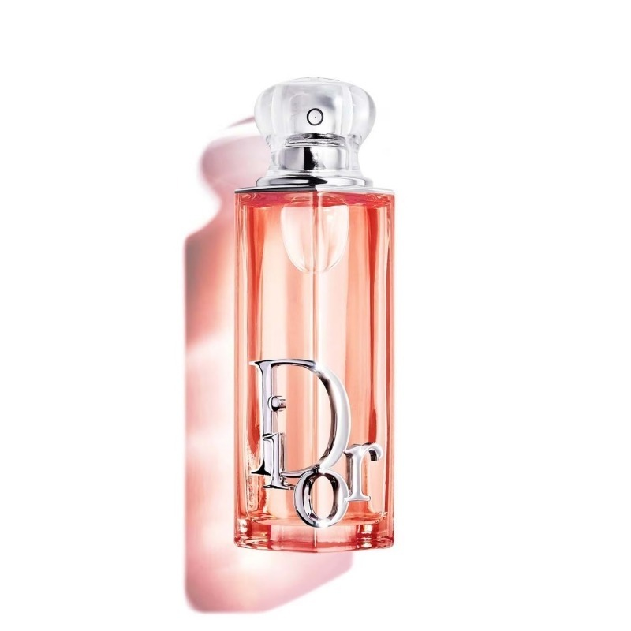

Тип: Женские духи
Семейство ароматов: сладкие, цветочные, фруктовые
Верхние ноты: персик
Средние ноты: жасмин
Базовые ноты: взбитые сливки, ваниль
Christian Dior Addict Peachy Glow — это новая глава культовой коллекции Addict,
созданной в 2025 году Франсисом Куркджяном в рамках трио Glow, посвященного
современным девушкам, которые не боятся сиять. Вдохновленный идеей «сочного,
спелого персика, в который вы вгрызаетесь в середине лета», аромат воплощает
фруктовую сторону цветов в ярком и аппетитном звучании.
Звучание парфюма раскрывается как нежное объятие: сочный и бархатистый персик
в верхней ноте сразу создает настроение тепла и беззаботности. В сердце
композиции царит абсолют жасмина, чья чувственная насыщенность придает аромату
глубину и утонченность, но звучит легко и прозрачно благодаря фруктовому обрамлению.
База — это настоящее лакомство: ноты взбитых сливок и ванили превращают шлейф в мягкое,
обволакивающее облако, которое окутывает кожу уютом и нежностью.
Peachy Glow — это выбор для молодых и дерзких сердец, ищущих в парфюмерии Christian
Dior Addict радость и сияние. Он идеально подойдет поклонницам гурманских и фруктовых
ароматов, которые хотят чувствовать себя героинями современной сказки. Созданный, чтобы
дарить тепло и чувственность, этот аромат становится идеальным спутником для повседневного
ношения, свиданий и моментов, когда хочется окружить себя светлой и жизнерадостной аурой.